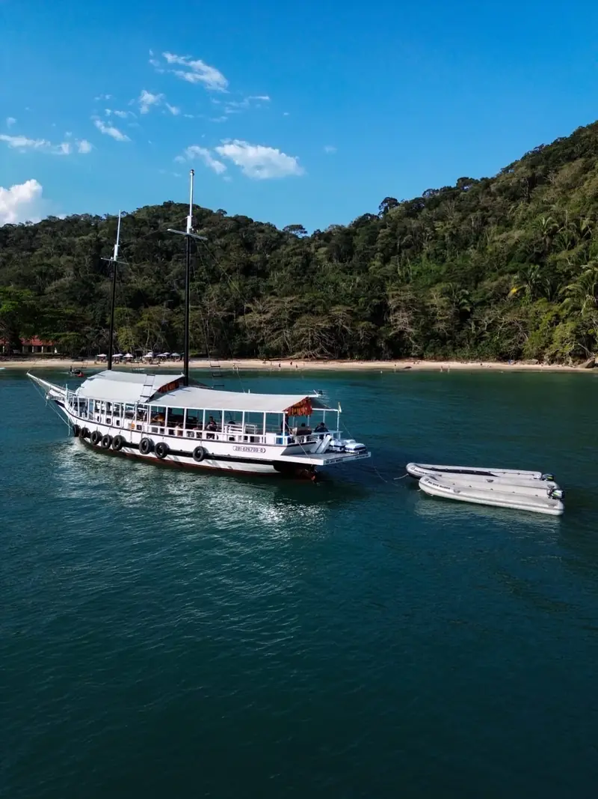
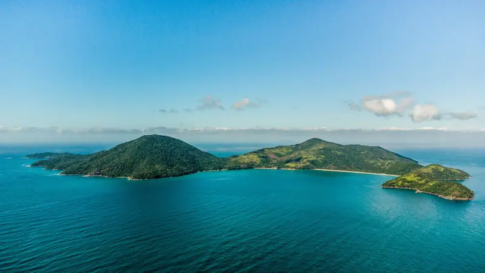
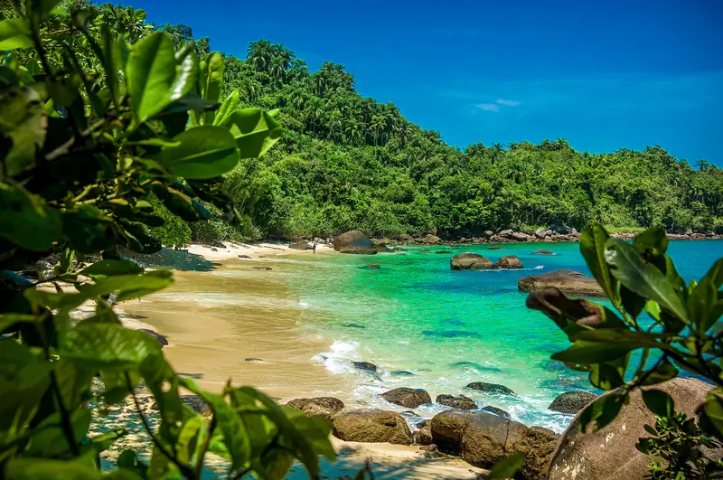
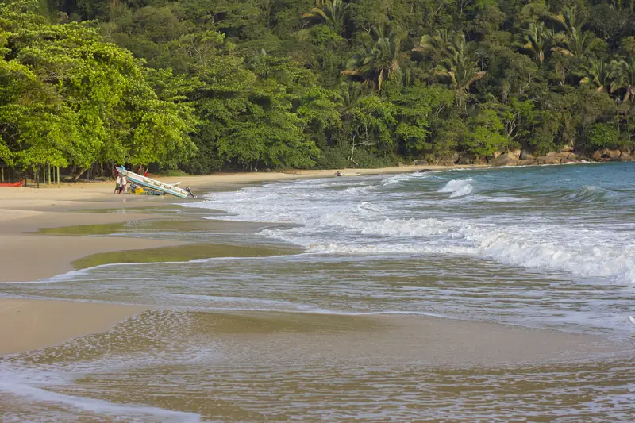
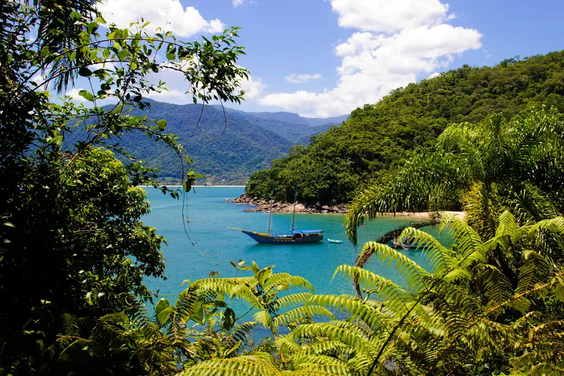
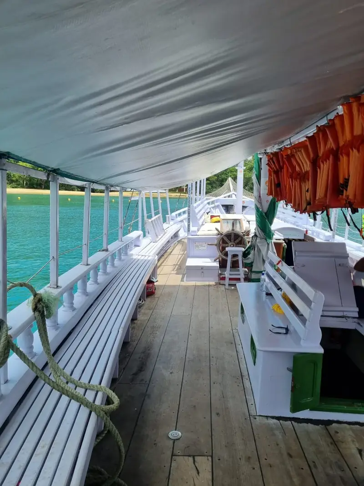
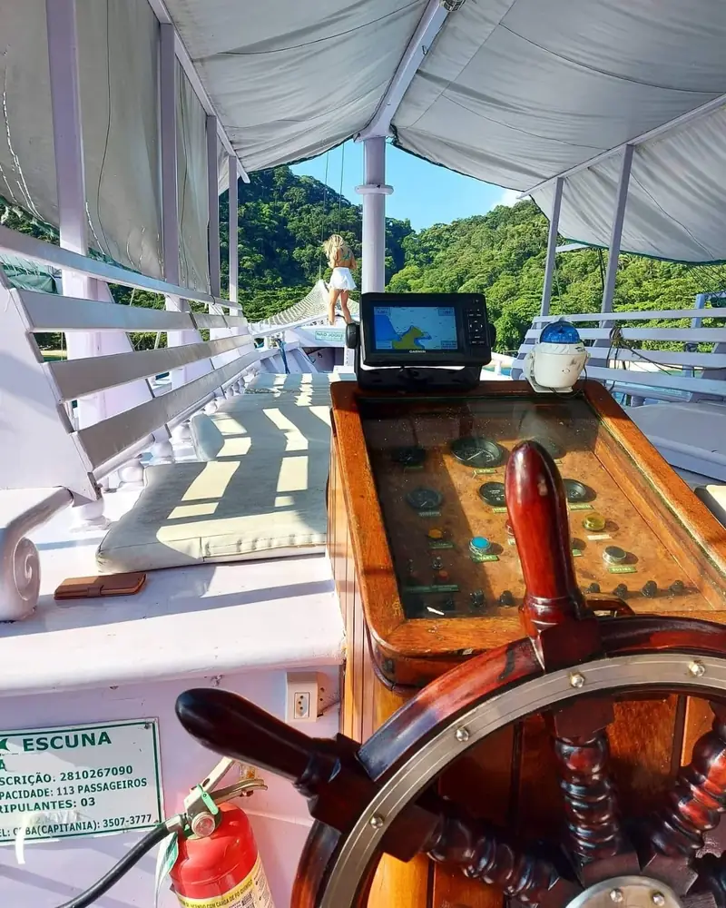

Passeios de escuna, lancha e trilhas em Ubatuba
Ilha Anchieta, Ilha das Couves, Praia das Sete Fontes e a Travessia das 7 praias. Você escolhe o passeio e reserva pelo WhatsApp.
Escolher meu passeio
Quatro jeitos de conhecer Ubatuba
Dois passeios de barco e duas trilhas. Toque no passeio para ver o roteiro, os horários e os valores.

Ilha Anchieta e Sete Fontes

Ilha das Couves e Prumirim

Trilha das 7 Fontes

Travessia das 7 praias
O que tem a bordo
Na escuna do passeio das 5 ilhas:
- Banheiro a bordo
- Coletes salva-vidas e espaguete flutuador
- Bote de apoio
- Álcool em gel
- Fotógrafo na maioria das saídas, com fotos pagas à parte


"Foi sensacional a experiência! A Gi foi paciente, super companheira e profissional! Indico de olhos fechados o serviço dela! Farei mais vezes a trilha das 7 praias"
"Algumas Trilhas é obrigatório fazer com Guias locais, tive o acompanhamento Da Guia Gisele e Aghata, conhecem muito bem a região, são cadastur , não só fazem a Trilha mais explicam a história do local , super atenciosas e com certeza farei outras Trilhas com elas"
Antes de reservar
As dúvidas que valem para todos os passeios. As de cada roteiro estão na página dele.
Perguntar outra coisaComo eu reservo um passeio?
Pelo WhatsApp (12) 99616-1360. Diga o passeio, a data e quantas pessoas vão. Os valores podem mudar conforme a data e na alta temporada, por isso a confirmação é sempre pela conversa.
E se o mar estiver ruim no dia?
Por segurança, o roteiro pode mudar quando o mar ou o vento não deixam navegar. No passeio da Ilha Anchieta, por exemplo, a Praia das Sete Fontes é trocada pela Praia do Flamengo.
Quem enjoa no barco pode ir?
Pode. A recomendação da agência é tomar um remédio para enjoo antes de embarcar.
O que levar?
Um casaco leve para a volta, porque no mar esfria no fim da tarde. E proteja o celular ao embarcar e desembarcar: a agência não se responsabiliza por objetos pessoais molhados ou perdidos.
Não tenho carro. Como chego ao embarque?
A agência indica motoristas de confiança, com pagamento à parte. É só pedir no WhatsApp.
Fale com a agência
Reserva, valores da data e indicação de motorista: tudo pelo WhatsApp.
Chamar no WhatsApp